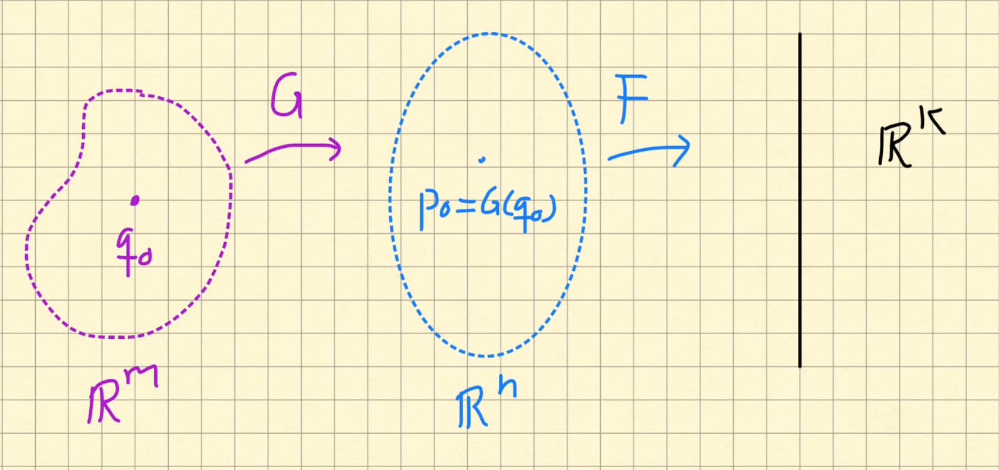
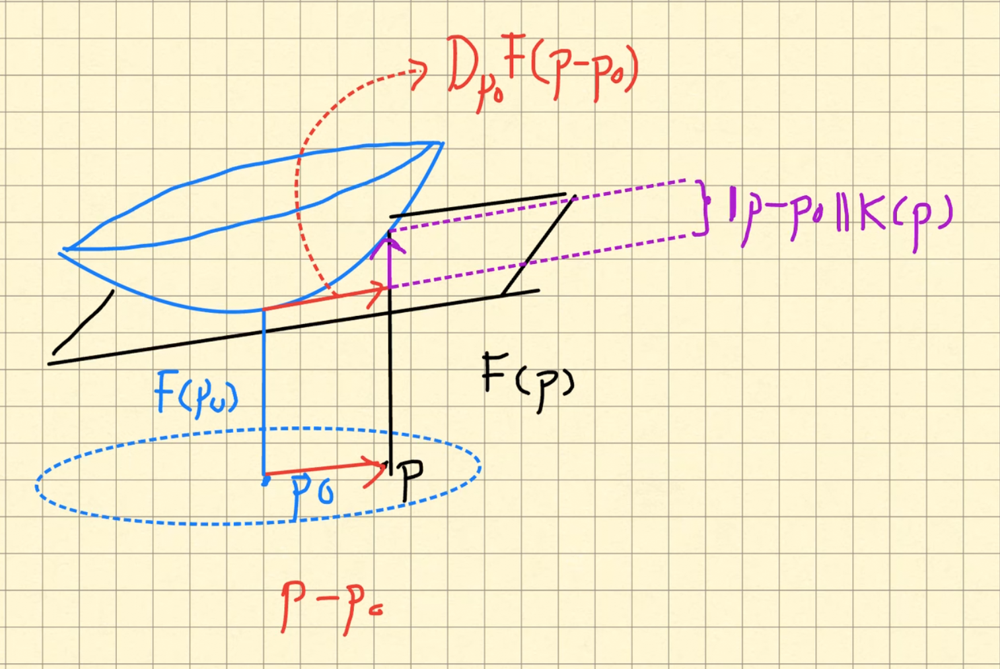
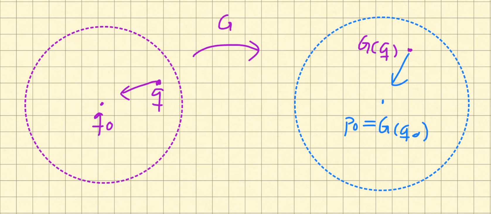

Sea $U\ne \emptyset $ un abierto de $\mathbb{R}^n$, $p_0\in U$ y $F:U\to \mathbb{R}^m$ una función diferenciable en $p_0$. Sea \(D_{p_0}F\) la derivada de $F$ en $p_0$.
Demuestra que existe una función con valores vectoriales, definida en una bola centrada en $p_0$, $E:B_r(p_0) \to \mathbb{R}^m$ tal que
Sugerencia: define $E(p)=F(p)-F(p_0)-D_{p_0}F(p-p_0)$ y prueba que el límite que se pide es cero.
La parte \(F(p_0)+D_{p_0}F(p-p_0)\) se llama la aproximación lineal de \(F\) en \(p_0\).
Al ser \(U\) abierto exsite un \(r>0\) tal que \(B_r(p_0)\subseteq U\). Para \(p\in B_r(p_0)\) definimos \(E(p)=F(p)-F(p_0)-D_{p_0}F(p-p_0)\). Es claro que para \(p\in B_r(p_0)\) se satisface \[ F(p)=F(p_0)+D_{p_0}F(p-p_0)+E(p) \] Además \[ \frac{\|E(p)\|}{\|p-p_0\|}=\frac{\|F(p)-F(p_0)-D_{p_0}F(p-p_0)\| \|}{\|p-p_0\|} \] por lo que \(\lim_{p\to p_0}\frac{\|E(p)\|}{\|p-p_0\|}=0\) se sigue de Definición 7.2 (también ver la Nota 7.3).
Sean $U \subset \mathbb{R}^n$ y $V\subseteq \mathbb{R}^m$ subconjuntos abiertos y $G:V \to \mathbb{R}^n$, $F:U \to \mathbb{R}^k$ tal que $G(V)\subseteq U$ (para que $F\circ G$ esté bien definida). Supongamos que $q_0\in V$, $G$ es diferenciable en $q_0$ y $F$ es diferenciable en $G(q_0)$.

Entonces $F\circ G$ es diferenciable en $q_0$ y $$ D_{q_0}(F\circ G)=(D_{G(q_0)}F)(D_{q_0}G) $$ donde en la última igualdad se puede pensar como multiplicación de matrices o como composición de funciones lineales.
Denota $p_0=G(q_0)$. Primero vamos a probar que existe una función continua \(K\) tal que \[ F(p)=F(p_0)+D_{p_0}F(p-p_0)+\|p-p_0\|K(p) \] para \(p\) cercano a \(p_0\) y con \(K(p_0)=0\).
Ya que $F$ es diferenciable en $p_0$, \(F\) admite una aproximación lineal (Lema 13.1) y podemos escribir \[ F(p)=F(p_0)+D_{p_0}F(p-p_0)+E(p) \] para \(p\) cercano a \(p_0\) y donde la función \(E\) satisface \[ \lim_{p\to p_0} \frac{\|E(p)\|}{\|p-p_0\|}=0. \]
Ahora definimos $$ K(p)=\left\{ \begin{array}{cc} \frac{E(p)}{\|p-p_0\|} & p\ne p_0 \\ 0 & p=p_0 \end{array} \right. $$ Es claro que \(K\) está definida para \(p\) cercano a \(p_0\) y es continua para todo \(p\ne p_0\). Además es continua en \(p_0\) pues \[ \lim_{p\to p_0}\|K(p)\|=\lim_{p\to p_0}\frac{\|E(p)\|}{\|p-p_0\|}=0=K(p_0). \] Finalmente de la definición de \(K\) y la aproximación lineal para \(F\) se sigue, para \( p\ne p_0\) \begin{eqnarray*} F(p)&=&F(p_0)+D_{p_0}F(p-p_0)+E(p)\\ &=&F(p_0)+D_{p_0}F(p-p_0)+\|p-p_0\|\frac{E(p)}{\|p-p_0\|}\\ &=&F(p_0)+D_{p_0}F(p-p_0)+\|p-p_0\|K(p) \end{eqnarray*}
Si queremos visualizar la situación tenemos algo asi:

Como segundo paso vamos a probar que para $q$ cercano a $q_0$: \begin{equation}\label{Eqn:ReglaCadena1} F(G(q))= F (G (q_0))+ (D_{p_0}F)( G(q)-G(q_0)) + \|G(q)-G(q_0)\| K(G(q)) \end{equation}
Ya que \(G\) es continua en \(q_0\) (al ser diferenciable en \(q_0\)) si \(q\) está cercano a \(q_0\) entonces \(G(q)\) está cercano a \(G(q_0)=p_0\).

Por lo tanto podemos utilizar el inciso (1) para obtener (tomando \(p=G(q)\)) \[ F(G(q))= F (G (q_0))+ (D_{p_0}F)( G(q)-G(q_0)) + \|G(q)-G(q_0)\| K(G(q)) \]
Como penúltimo paso vamos a probar que los límites de las funciones que aparecen en el lado derecho de la desigualdad anterior son cero. Es decir \begin{eqnarray} \lim_{q \to q_0} \| (D_{p_0}F)(\tilde{K}(q))\|&=&0 \label{Eqn:AuxReglaCadenaLimite1}\\ \lim_{q \to q_0} \frac{\| G(q)-G(q_0)\|}{\|q-q_0\|}\| K(G(q))\|&=& 0 \label{Eqn:AuxReglaCadenaLimite2} \end{eqnarray}
Prueba de \eqref{Eqn:AuxReglaCadenaLimite1}:
La prueba de \eqref{Eqn:AuxReglaCadenaLimite1} es sencilla pues al ser \(D_{p_0}F\) una función lineal es continua por lo tanto \begin{eqnarray*} \lim_{q\to q_0} D_{p_0}(\tilde{K}(q))&=& D_{p_0}(\lim_{q\to q_0}\tilde{K}(q))\\ &=& D_{p_0}(\tilde{K}(q_0))\\ &=& D_{p_0}(0)\\ &=&0. \end{eqnarray*} por lo tanto el primer límite se sigue simplemente tomando normas en el límite anterior.
Prueba de \eqref{Eqn:AuxReglaCadenaLimite2}:
El segundo límite es un poco más complicado pero se sigue de la siguiente manera. Por \eqref{Eqn:ReglaCadena2} tenemos que para \(q\) cercano a \(q_0\) se cumple \[ G(q)-G(q_0)=D_{q_0}G(q-q_0)+ \| q-q_0\|\tilde{K}(q) \] por lo que al tomar norma y dividir por \(\|q-q_0\|\) (para \(q\ne q_0\)) se sigue que \begin{eqnarray*} \frac{\|G(q)-G(q_0)\|}{\|q-q_0\|}&=&\frac{\| D_{q_0}G(q-q_0)+ \|q-q_0\|\tilde{K}(p)\|}{\|q-q_0\|} \\ &\leq & \frac{\|D_{q_0}G(q-q_0)\|}{\|p-p_0\|}+\frac{\|q-q_0\|\|\tilde{K}(q)\|}{\|q-q_0\|} \\ &\leq & \frac{\|D_{q_0}G(q-q_0)\|}{\|p-p_0\|}+\|\tilde{K}(q)\| \end{eqnarray*} Ahora aplicamos el Ejercicio 3.41 para obtener \(\|D_{q_0}G(q-q_0)\|\leq \|D_{q_0}G\|_2\|p-p_0\|\) y al tomar esta cota en las desigualdades anteriores se sigue que \[ \frac{\|G(q)-G(q_0)\|}{\|q-q_0\|}\leq \|D_{q_0}G\|_2+\|\tilde{K}(q)\|. \] Para terminar el segundo límite, usando la desigualdad anterior llegamos a \[ 0\leq \frac{\| G(q)-G(q_0)\|}{\|q-q_0\|}\| K(G(q))\|\leq (\|D_{q_0}G\|_2+\|\tilde{K}(q)\|)\|K(G(q))\| \] ahora usando que \(G,K\) y \(\tilde{K}\) son continuas con \(K(G(q_0))=K(p_0)=0, \tilde{K}(q_0)=0\) se sigue de la ley del sándwich que \[ \lim_{q\to q_0} \frac{\| G(q)-G(q_0)\|}{\|q-q_0\|}\| K(G(q))\|=0. \]
La regla de la cadena dice algo sencillo: la derivada de una composición es el producto de las derivadas. Esto es algo que ya se había visto en el caso de funciones de una variable, pero ahora se generaliza a funciones de varias variables.
En la práctica, la regla de la cadena se utiliza para calcular derivadas parciales de funciones que se definen como composiciones. Vamos a ver que la regla de la cadena nos dice que la derivada de una composición de funciones se puede pensar como la suma de todas las razones de cambio de la función con con respecto a todas las variables indeterminadas.
Por ejemplo si tenemos una función \(u\) de tres variables \(x,y,z\) y cada una de estas variables es a su vez función de otras tres variables \(r,s,t\), entonces podemos pensar \[ u=u(x,y,z)=u(x(r,s,t),y(r,s,t),z(r,s,t)) \]
El problema es encontrar las derivadas parciales de \(u\) con respecto a \(r,s,t\). Pero al variar \(r\) varian \(x,y,z\) y al variar \(x,y,z\) varia \(u\). La idea es que todas estas variaciones se van encadenando, por lo que \[ \frac{\partial u}{\partial r}=\frac{\partial u}{\partial x}\frac{\partial x}{\partial r}+\frac{\partial u}{\partial y}\frac{\partial y}{\partial r}+\frac{\partial u}{\partial z}\frac{\partial z}{\partial r}. \] Para recordar la fórmula nota que en el lado derecho aparecen las diferenciales de todas las variables originales de \(u\), en este caso \(x,y,z\), y que éstas diferenciales parece que se van cancelando con la diferencial de la variable que estamos tomando, en este caso \(r\), por ejemplo \(\frac{\partial u}{\partial x}\frac{\partial x}{\partial r}\) se puede pensar como \(\frac{\partial u}{\partial r}\) y así con los demás términos.
Vamos a usar la regla de la cadena para probar la fórmula anterior y otras similares.
Al pensar \(u\) como una función que depende de las variables \(r,s,t\) podemos escribir \(u\) como la composición de dos funciones, en concreto \(F:\mathbb{R}^3 \to \mathbb{R}^3\) dada por \(F(r,s,t)=(x(r,s,t),y(r,s,t),z(r,s,t))\) y \(G:\mathbb{R}^3 \to \mathbb{R}\) dada por \(G(x,y,z)=u(x,y,z)\). Entonces \(u=G\circ F:\mathbb{R}^3 \to \mathbb{R}\) y usando la regla de la cadena se tiene que \[ D_{(r,s,t)}u = D_{F(r,s,t)}G D_{(r,s,t)}F. \] Por separado tenemos \begin{eqnarray*} D_{(r,s,t)}u=[\partial_ru,\partial_su,\partial_tu],\\ D_{F(r,s,t)}G=[\partial_xu,\partial_yu,\partial_zu],\\ D_{(r,s,t)}F = \left[\begin{matrix} \partial_rx & \partial_sx & \partial_tx\\ \partial_ry & \partial_sy & \partial_ty\\ \partial_rz & \partial_sz & \partial_tz \end{matrix}\right]. \end{eqnarray*} Las matrices del lado derecho de la regla de la cadena se ven como: \begin{eqnarray*} [\partial_xu,\partial_yu,\partial_zu]\left[\begin{matrix} \partial_rx & \partial_ry & \partial_rz\\ \partial_sx & \partial_sy & \partial_sz\\ \partial_tx & \partial_ty & \partial_tz \end{matrix}\right] \end{eqnarray*} La primera entrada de la multiplicación anterior es \[ \partial_xu\partial_rx + \partial_yu\partial_ry + \partial_zu\partial_rz \] e igualando a la primera entrada de \(D_{(r,s,t)}u\) se obtiene: \[ \partial_ru = \partial_xu\partial_rx + \partial_yu\partial_ry + \partial_zu\partial_rz \] y escribiendo lo anterior con toda la notación de derivadas parciales se obtiene: \[ \frac{\partial u}{\partial r}=\frac{\partial u}{\partial x}\frac{\partial x}{\partial r}+\frac{\partial u}{\partial y}\frac{\partial y}{\partial r}+\frac{\partial u}{\partial z}\frac{\partial z}{\partial r}. \]
Este ejercicio es una especie de recíproco del Lema 10.1.
Sea $U\ne \emptyset $ un abierto de $\mathbb{R}^n$, $p_0\in U$ y $F:U\to \mathbb{R}^m$ una función.
Supongamos que existe una bola abierta $B_r(p_0)\subseteq U$, una función $\tilde{E}:B_r(p_0) \to \mathbb{R}^m$ y una función lineal $L:\mathbb{R}^n \to \mathbb{R}^m$ que satisfacen
Considera las funciones $G: \mathbb{R}^3 \to \mathbb{R}^2$, $F:\mathbb{R}^2 \to \mathbb{R}^2$ dadas por \begin{eqnarray*} G(x,y,z)&=&(g_1(x,y,z),g_2(x,y,z)), \\ F(u,v)&=&(f_1(u,v), f_2(u,v) ) \end{eqnarray*} donde \begin{eqnarray*} g_1(x,y,z)&=&xy,\\ g_2(x,y,z)&=&yz, \\ f_1(u,v)&=&u^2-v^2,\\ f_2(u,v)&=&u+v. \end{eqnarray*} Define $H:\mathbb{R}^3 \to \mathbb{R}^2$ por $H(x,y,z)=F(G(x,y,z))$.
Considera las funciones $F:\mathbb{R}^3\to \mathbb{R}^2$ y $G:\mathbb{R}^3\to \mathbb{R}^3$ dadas por $$ F(x,y,z)=(x^2+y+z, 2x+y+z^2), \quad G(u,v,w)=(2uv^2w^2,w^2\sen(v),u^2e^v) $$
Considera la función $G:\mathbb{R}^2 \to \mathbb{R}^2$ dada por $$ G(x,y)=(x+y,2x-y ) $$
Sean $G:\mathbb{R}^m \to \mathbb{R}^n$, una función de clase $C^1$ en $\mathbb{R}^m$, con funciones coordenadas $G(q)=(g_1(q),\dots, g_n(q))$ y sea $f:\mathbb{R}^n \to \mathbb{R}$ una función de clase $C^1$ en $\mathbb{R}^n$ y sea $h=f\circ G$. Usa la regla de la cadena para demostrar que el gradiente de $h$ es una combinación lineal de los gradientes de las $g_k$, en específico: $$ \nabla_{q_0} h= \sum_{k=1}^n \partial_{p_k}f(G(q_0)) \nabla_{q_0}g_k $$ nota que $\partial_{p_k}f(g(q_0))$ es escalar y $\nabla_{q_0}g_k$ es vector.
Pidele a Gemini que genere un quiz para repasar el tema de ésta sección. El default son 10 preguntas de opción múltiple, pero puede generar menos preguntas y ojo que puede tardar un poco en generar el quiz (fijate en la esquina superior derecha).